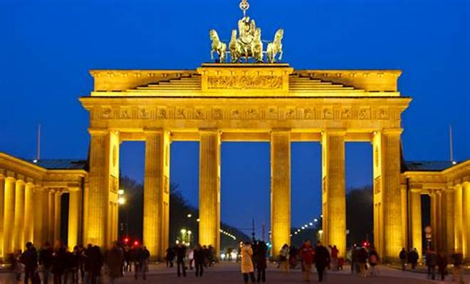
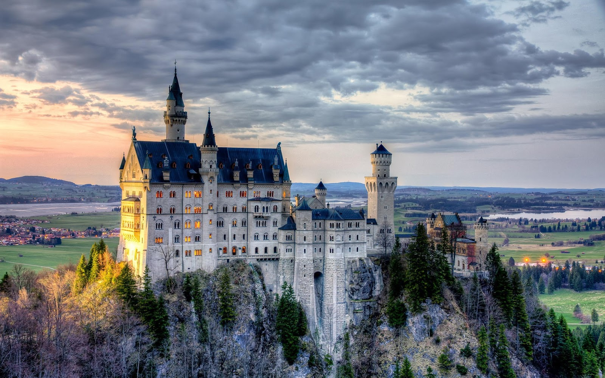
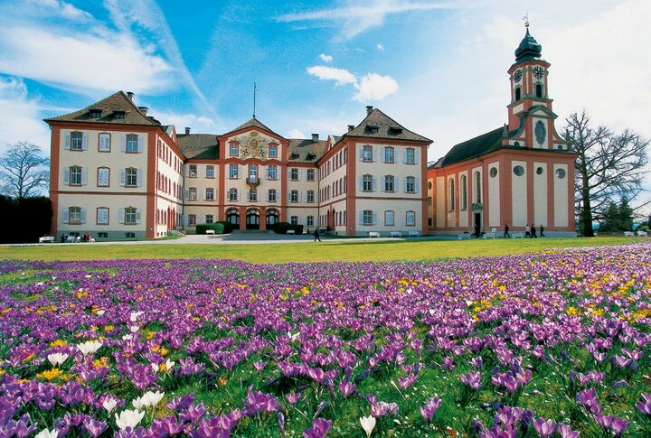

GERMANY
History, culture, and natural beauty are perhaps the defining features of a vacation in Germany. With numerous historic cities and charming small towns, complemented by vast forests and mountains, visitors have a wealth of unique destinations to explore in this beautiful region of Europe.
Travelers interested in sightseeing or the arts should consider visiting larger metropolitan areas like Munich, Frankfurt, or Hamburg. For those seeking outdoor adventures, the majestic Bavarian Alps, the Black Forest, and the Rhine Valley are excellent options.
Berlin's Brandenburg Gate
Inspired by the Acropolis in Athens and constructed in 1791 for King Frederick William II, the grand sandstone Brandenburg Gate in Berlin's Mitte district stands as the city's first Neoclassical building. Rising to a remarkable 26 meters, it includes the Quadriga—a striking four-horse chariot bearing the goddess of victory on top.
Each side of the gate features six massive columns, creating five impressive passageways: four for general traffic and one central passage reserved for royal carriages. Large Doric columns also adorn the buildings flanking the Gate, which once housed toll collectors and guards.
The Ultimate Fairy-Tale Castle: Schloss Neuschwanstein, Bavaria
The quaint old town of Füssen, nestled between the Ammergau and Allgäu Alps, is a popular alpine resort and winter sports destination, making it an ideal base for exploring nearby Neuschwanstein Castle. This iconic fortress is one of Europe's most renowned and picturesque royal castles.
Constructed by King Ludwig II of Bavaria between 1869 and 1886, this many-towered, battlemented fantasy castle famously inspired Walt Disney’s theme park castles. Visitors can choose from various tour options, including guided tours of the lavish interior, featuring the Throne Room, the Singers' Hall, and offering some of the most stunning views in the region.
Insel Mainau: The Flower Island of Lake Constance
Insel Mainau, the breathtaking Flower Island on Lake Constance, spans 110 acres and draws numerous visitors to its lush parks and gardens, rich with semi-tropical and tropical plants.
You can reach the island by boat or by a pedestrian bridge from the mainland, so plan for some additional travel time beyond the two or more hours needed to fully explore this remarkable site. Plenty of public parking is available on the mainland, including spaces with electric vehicle charging stations.